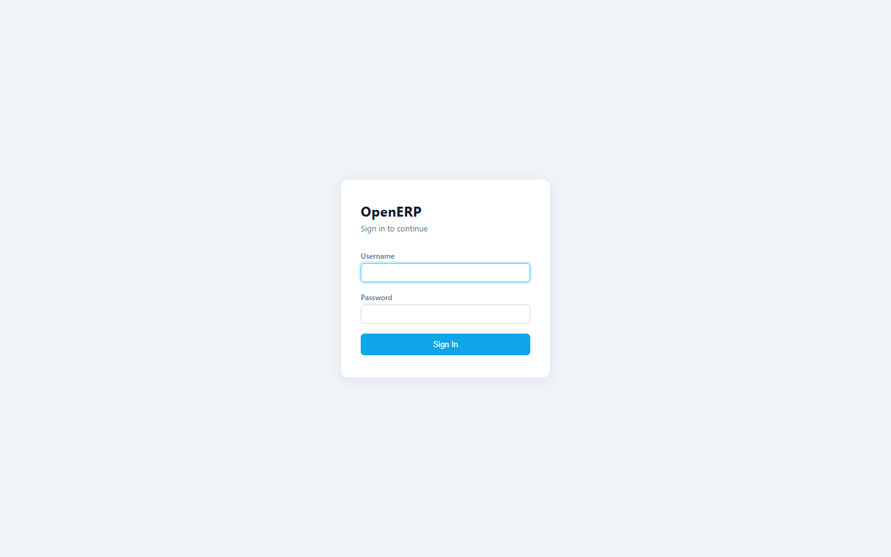
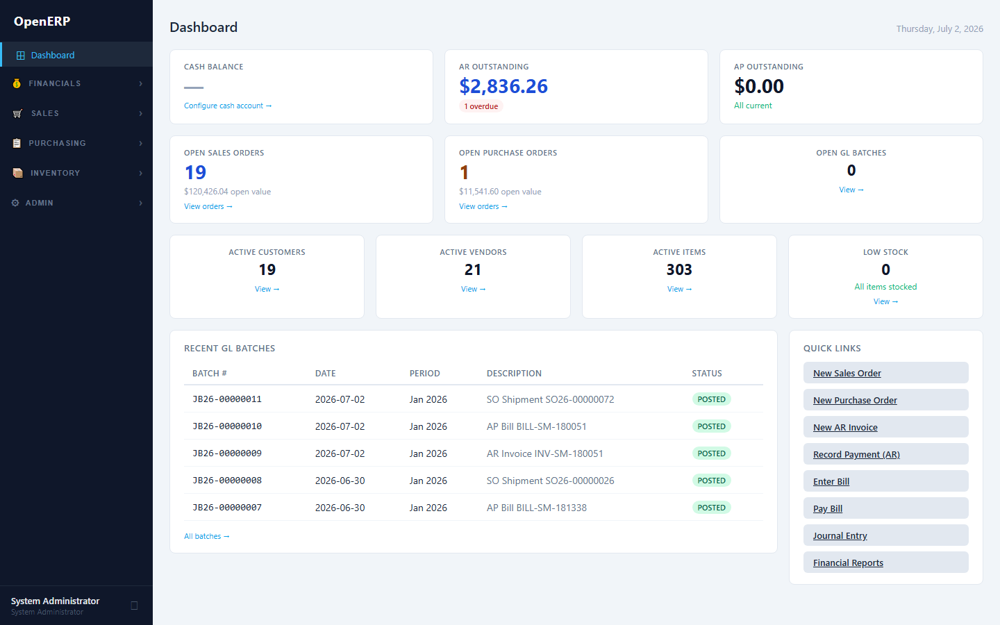
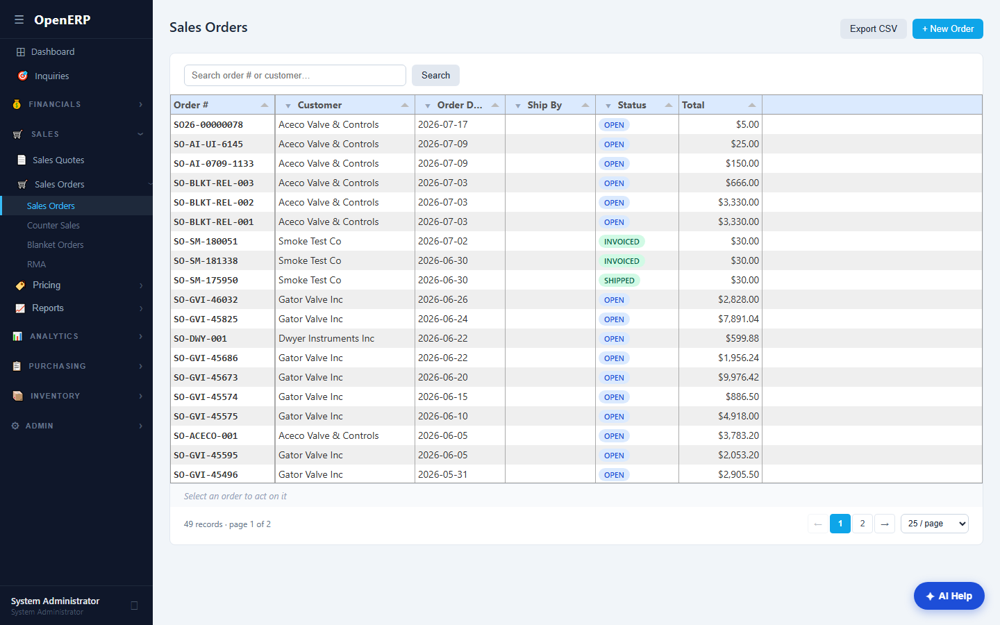
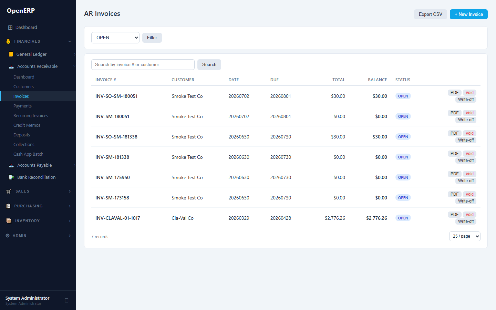
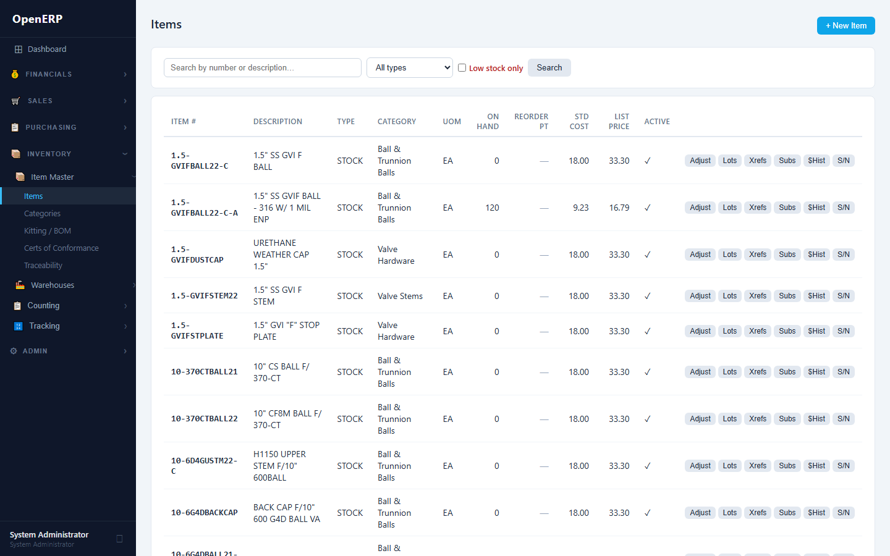
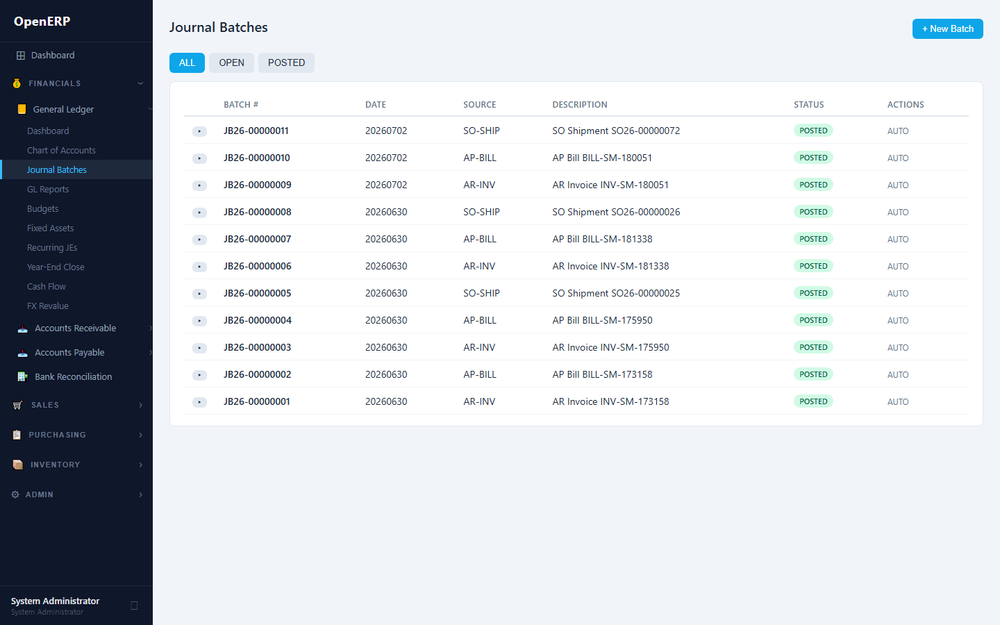
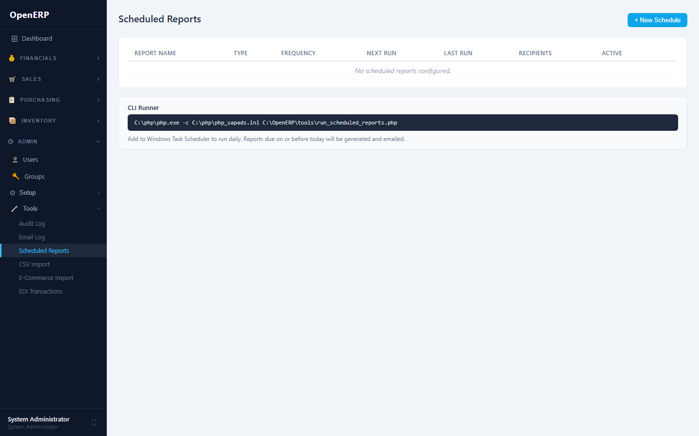
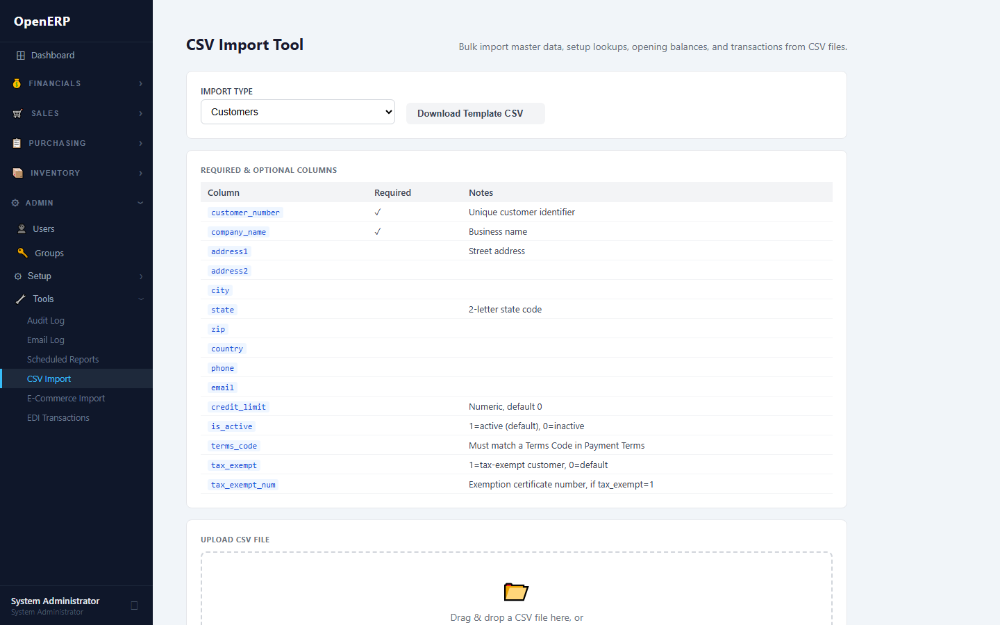
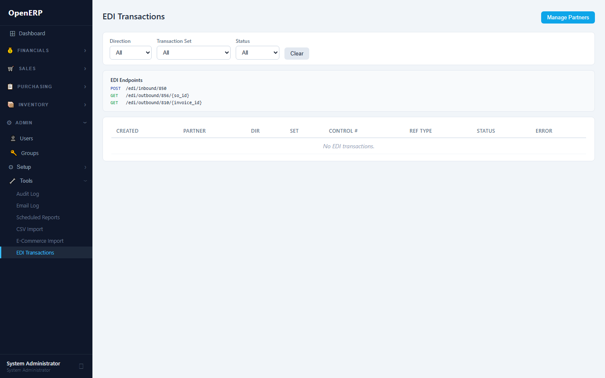

Enterprise Resource Planning & CRM System
July 2026
Audience: End users, system administrators, and business analysts operating an OpenERP installation. For installation and server setup, see INSTALL.md.
Navigate to http://<server>:5173 in a browser. Log
in with the credentials provided by your administrator. The default
admin account created at install time is admin /
admin — change this password immediately
under Admin → Users before going live.
The session token expires after 8 hours. You will be redirected to the login screen automatically when it expires.

The Dashboard shows live KPIs pulled from the database:
| Tile | What it shows |
|---|---|
| Cash | Balance of the GL account configured as
gl_cash_account |
| AR Balance | Sum of open AR invoice balances |
| AP Balance | Sum of open AP bill balances |
| Open SO | Count and value of sales orders in OPEN or PARTIAL status |
| Open PO | Count and value of purchase orders in OPEN or PARTIAL status |
| Overdue AR | Invoices past due date |
Check the Dashboard every morning. A rising AR Balance combined with a flat Cash balance is an early warning that collections need attention. A rising AP Balance approaching its due dates means a check run is due.

Go to Admin → Company Settings to configure:
gl_*_account config keys.
Without them the system falls back to the first active account with the
matching subtype.Do this first. Until the GL account mappings are configured, the auto-posting engine posts to the first matching account it finds. If your chart of accounts has multiple accounts of the same subtype, the wrong account may receive the entry. Set the mappings before processing any transactions.
Before processing any transactions, import or manually create your chart of accounts under GL → Accounts.
Each account has: - Account number — user-defined
(e.g. 1000, 4000-01) - Account
name - Account type — ASSET, LIABILITY,
EQUITY, REVENUE, EXPENSE - Account subtype — AR, AP,
CASH, SALES, COGS, INVENTORY, etc. The subtype is used by the
auto-posting engine to resolve accounts from the config keys above. -
Is header — header accounts cannot receive journal line
amounts; they exist only for subtotaling in financial statements.
Use GL → Fiscal Years to create the current fiscal year, then GL → Periods to create the twelve monthly periods inside it. The system will not allow posting to a closed period.
Before your first live transaction, confirm the following:
Understanding how data flows between modules prevents duplicate work and explains why a transaction in one area shows up somewhere unexpected.
PURCHASING (PO) SALES (SO)
| |
| Receive goods | Ship goods
v v
INVENTORY (on-hand + FIFO layers) <------+
| |
| COGS consumed on shipment |
v |
GENERAL LEDGER (auto-posted) AR INVOICES
^ |
| | Customer pays
| v
AP BILLS <-- (bill from PO) AR PAYMENTS
| |
| Vendor paid | Applied to invoice
v v
AP PAYMENTS -----> GL: DR AP / CR Cash GL: DR Cash / CR AREvery transaction that touches money posts a GL batch automatically. You do not need to create manual journal entries for normal operations.
The following events create a GL journal batch silently in the background the moment you save:
| Event | GL Debit | GL Credit |
|---|---|---|
| AR Invoice saved | AR | Revenue (+ Tax Payable) |
| AR Payment applied to invoice | Cash | AR |
| AP Bill saved | Expense | AP |
| AP Payment applied to bill | AP | Cash |
| SO Shipment posted | COGS | Inventory |
| Inventory Adjustment (positive qty) | Inventory | Inv-Adj |
| Inventory Adjustment (negative qty) | Inv-Adj | Inventory |
| AR Credit Memo created | Revenue | AR |
| AP Debit Memo created | AP | Expense |
| PO Receive (no direct GL) | — | — (FIFO layer created; GL posts when items ship) |
Key implication: When you receive a PO, the goods enter inventory and a FIFO cost layer is created, but no GL entry posts at that moment. The GL entry (COGS) posts when those items are later shipped on a Sales Order. This is the standard perpetual inventory model — the inventory asset account increases on receipt via the AP bill (DR Inventory is embedded in the COGS flow), and COGS hits the income statement on shipment.
Many users expect cash to appear in their bank account when they “apply” a payment. What actually happens is a GL entry (DR Cash / CR AR). The cash account balance rises, the AR balance falls. The actual bank deposit must be reconciled in Bank Reconciliation (§7.8) when the bank statement confirms the funds cleared.
Invoice saved → AR balance rises, Revenue balance rises
Payment saved → No effect yet (payment is unmatched)
Payment applied → AR balance falls, Cash (GL) balance rises
Bank statement rec → Statement line matched to payment, bank confirmedPO created → No GL effect
PO received → On-hand rises; FIFO layer created
AP Bill from PO → AP balance rises, Expense (or Inventory) balance rises
AP Payment applied → AP balance falls, Cash balance fallsFor inventory items: the AP bill posts DR Inventory / CR AP — the cost stays in inventory until the items ship, at which point COGS is posted. For service or expense items (non-inventory): the AP bill posts DR Expense / CR AP directly.
When a Sales Order is created, processed, and invoiced:
The sales rep’s commission accrues conceptually at step 3 (when the invoice is created). The Commission Report at Sales → Commissions shows commission earned on invoiced SOs.
When you select an item on a Sales Order, the ATP badge shows:
ATP = On-hand − Committed (open SO lines) + On-order (open PO lines)A green badge means you can promise this quantity to the customer. A red badge means either you will need to back-order or you need to place a PO first. The ATP calculation happens in real time and reflects all open SOs and POs — it is the link between sales commitments and purchasing plans.
The Order-to-Cash workflow moves a sales opportunity from quotation through cash collection.
Customer → Quote → Sales Order → Shipment → AR Invoice → Cash Receipt → Applied → ReconciledAR → Customers — create a customer before entering any orders.
Key fields: - Customer number — unique identifier; printed on documents - Credit limit — if set, the system blocks SO creation when the customer’s open AR + open SO value exceeds this limit - On credit hold — manually block all new orders for this customer; a red banner appears on the SO form when a held customer is selected - Default sales rep — auto-populated on new SOs when the customer is chosen - Customer class — used by matrix pricing (e.g. KEY, STANDARD, PROSPECT) - Payment terms — defaulted onto invoices
Ship-to addresses: Click Ship-To on the customer row to manage multiple delivery addresses. One can be flagged as default; it auto-selects on the SO form.
Contacts: Click Contacts to add named contacts with phone and email. Contacts flagged “primary” receive emailed documents.
What to do next after adding a customer: Set the credit limit and payment terms before their first order. A customer with no credit limit will never be blocked by the credit check, regardless of how much they owe.
Sales → Quotes — optional step before creating a firm order.
Statuses: DRAFT → SENT →
ACCEPTED or EXPIRED or
CANCELLED
What comes next: After a customer accepts a quote (verbally or in writing), click Accept to convert it to a Sales Order. The quote line prices and quantities carry over exactly. You can then edit the SO if quantities need adjustment before shipment.
Sales → Orders — the core transaction.

OPEN status.What comes next after saving a Sales Order: - If ATP is red on any line, go to Purchasing → Orders and place a PO for the shortfall. Or go to Inventory → Reorder Suggestions to see all understocked items at once. - If the order should ship today, proceed to the Ship action (below). - If payment terms are prepaid, go to AR → Deposits to record the customer’s payment before shipping.
| Status | Meaning | What to do |
|---|---|---|
| OPEN | No lines shipped yet | Pick and pack; click Ship when ready |
| PARTIAL | Some lines shipped | Ship remaining lines or create a back-order |
| SHIPPED | All lines shipped | Click Invoice to generate the AR invoice |
| INVOICED | AR invoice generated | Monitor payment in AR → Payments |
| CANCELLED | Voided before fulfilment | No further action needed |
Click Ship on an order in OPEN or PARTIAL status. Enter: - Ship date, period, warehouse - Per-line qty shipped (defaults to remaining qty) - Optionally: BOL number, carrier pro number, pieces, weight, freight class
The system: - Creates SHIPMENT inventory transactions
(reduces on-hand) - Consumes FIFO cost layers and calculates COGS -
Posts a GL batch: DR COGS / CR Inventory - Updates line statuses; sets
header to PARTIAL or SHIPPED
After shipping: Print or email the packing list (PDF button). The order status moves to SHIPPED. If not all lines shipped, status is PARTIAL — you can ship again or create a back-order. When all lines are SHIPPED, the Invoice button appears.
Once fully shipped (SHIPPED status), click
Invoice. Provide an invoice number, invoice date, due
date, and period. The system creates an AR invoice from the SO lines
with the exact shipped quantities.
After invoicing: The AR Invoice is created automatically and GL auto-posts (DR AR / CR Revenue). Email the invoice to the customer’s primary contact using the Email button on the invoice. Then monitor payment from AR → Payments. If the customer does not pay by the due date, the invoice will appear in AR → Aging under the overdue buckets.
Click Back-Order on a PARTIAL order to split remaining (unshipped) qty into a new linked SO. The original order’s lines are reduced to shipped qty; the new order covers the remainder.
When to use back-orders vs waiting: If you expect stock within a few days, leaving the order PARTIAL is fine. If the customer needs their invoice now and stock will take weeks, create a back-order so you can invoice the shipped portion immediately. The back-order report (Sales → Back-Orders) shows all open back-orders so nothing falls through the cracks.
After adding drop-ship lines to an SO, click Drop-Ship PO. Choose a vendor, PO number, dates, period, and terms. The system creates a PO with the customer’s shipping address; when the vendor ships and the PO is received, the linked SO lines are marked shipped automatically — no warehouse inventory movement occurs.
AR → Invoices — invoices can be created standalone or from an SO (§3.3).

Standalone invoice creation: 1. Choose customer, invoice number, dates, period, payment terms. 2. Add lines: item, description, qty, unit price, tax rate, and optionally a jurisdiction override. 3. The system computes subtotal, tax, and total. On save it posts a GL batch: DR AR / CR Revenue (+ CR Tax Payable if tax > 0).
Only OPEN invoices can be voided. Click
Void. The system posts a reversing GL batch.
When to void vs write-off: Void an invoice when it was created in error (wrong customer, wrong amount, duplicate). Write-off an invoice when the goods were delivered, the invoice is legitimate, but the customer will not pay. A void removes the revenue from your books; a write-off moves the balance to Bad Debt Expense.
For uncollectable balances, click Write-Off on an
OPEN or PARTIAL invoice. Enter the write-off amount. The system creates
an ar_write_offs record and posts GL: DR Bad Debt Expense /
CR AR.
AR → Payments — record a cash receipt: 1. Choose customer, payment number, date, amount, payment method (CHECK, WIRE, ACH, etc.), and period. 2. Save. The payment is unmatched (status: OPEN). 3. Click Apply. Select open invoices and enter the amount to apply to each. The system updates invoice balances and posts GL: DR Cash / CR AR.
What comes next after applying a payment: - The invoice balance falls (possibly to $0, which marks it PAID). - The Cash GL account rises. - The physical deposit must still be matched to your bank statement in Bank Reconciliation (§7.8) when the statement is available. - If the customer took an early-pay discount (e.g., 2/10-NET30) and paid less, apply their actual amount and enter the discount on the apply screen. The remaining balance is posted as discount taken.
AR → Credit Memos — issue a credit for a return or price adjustment: 1. Create with customer, amount, and description. Posts GL: DR Revenue / CR AR. 2. Apply to an open invoice using Apply — reduces the invoice balance. 3. Void a credit memo to reverse it (GL reversal posted).
Credit memo vs voiding the invoice: If the customer received goods and is returning some of them, issue a credit memo — the original invoice was correct when issued. If the invoice itself was wrong (wrong price, wrong customer), void the invoice and reissue.
AR → Deposits — record a prepayment before the invoice is raised: 1. Create deposit: customer, amount, period. 2. Apply to an invoice when it is ready: GL moves the deposit from Deposits liability to AR. 3. Void reverses the application or the original deposit.
Procedure for prepaid customers: Record the deposit as soon as you receive the check or wire. Ship and invoice as normal. When applying the deposit to the invoice, the invoice balance will drop to zero (or to the remaining amount if the deposit was partial). This keeps your AR aging accurate — the deposit does not show as an open invoice.
AR → Aging — shows open balances bucketed by 0–30, 31–60, 61–90, 91+ days past due.
How to run collections from the Aging screen: 1. Run the Aging report weekly (or daily for high-volume operations). 2. Focus the 61–90 and 91+ columns first — these are the most at risk. 3. For each overdue customer, click through to the customer record to see the contact name and phone. 4. Log your contact attempt in AR → Collections with notes. 5. Customers who are 90+ days with no response: discuss write-off with management. 6. Customers who promise to pay: set a follow-up date in the Collections log.
AR → Collections — a prioritized queue of customers with overdue balances. Log contact attempts with notes; the contact history is visible per customer.
AR → Statements — view a customer’s transaction history for any date range. Print generates a PDF. Email sends it to the customer’s primary contact.
When to send statements: Send monthly statements to all customers with open balances on the last business day of the month. Many customers use the statement (not individual invoices) to schedule their payments. A statement shows all open invoices, any credits, and the total balance due.
Vendor → Requisition → RFQ → PO → Receipt → AP Bill → Payment → Applied → ReconciledAP → Vendors — create vendors before entering bills or POs.
Key fields: - Tax ID + Is 1099 — populated on the 1099 report at year end - Currency — if not USD, bills are entered in the vendor’s currency; FX gain/loss is computed when payment is applied - Payment terms — defaulted onto bills
Vendor bank accounts — under AP → Vendor Bank Accounts; used for ACH/EFT export.
What to do next after adding a vendor: Set payment terms and, if applicable, the currency. If the vendor is a US sole proprietor or LLC who provides services (not goods), check the Is 1099 box and enter their Tax ID (EIN or SSN) — you will need this at year end. Set a default expense GL account if all purchases from this vendor hit the same expense line.
Purchasing → Requisitions — internal request before a PO is issued.
Statuses: DRAFT → PENDING →
APPROVED / REJECTED → CONVERTED
or CANCELLED
approved_by.When to use requisitions: In organizations where purchasing approval is required before committing spend, requisitions are the gate. The requesting employee creates a DRAFT, submits it, and a manager approves or rejects. Only after approval can a PO be created. For small purchases below a threshold (e.g., under $500), you may configure your policy to allow POs directly without a requisition.
Purchasing → RFQs — request quotes from multiple vendors for the same items.
When to use RFQs: Use RFQs for any purchase where you have multiple potential vendors, the amount is significant, or you do not have an existing contract price. The comparison grid makes the decision defensible and documented. For routine reorders of items with a Vendor Catalog price (§4.10), you can skip the RFQ and go directly to a PO.
Purchasing → Orders — the core procurement transaction.
Creating a PO is similar to SO creation: choose vendor, dates,
period, terms, warehouse, and add lines (item, qty, unit cost). The PO
starts in OPEN status.
| Status | Meaning | What to do |
|---|---|---|
| OPEN | No lines received yet | Wait for delivery; expedite if overdue |
| PARTIAL | Some lines received | Receive remaining lines when they arrive |
| RECEIVED | All lines received | Click Bill to create the AP bill |
| BILLED | AP bill generated | Pay the bill in AP → Payments |
| CANCELLED | Voided before receipt | No further action needed |
Click Receive on an OPEN or PARTIAL PO. Enter
receipt number, receipt date, period, and warehouse (+ optional bin).
The system: - Creates RECEIPT inventory transactions
(increases on-hand) - Pushes a FIFO cost layer for each item received -
Updates line statuses; sets header to PARTIAL or RECEIVED
After receiving: The goods are now in inventory. The on-hand count on Items list will show the increase. The vendor’s bill has not yet been recorded — that happens when you click Bill. Do not click Bill until you have the vendor’s invoice in hand and have matched it against what you actually received (three-way match).
For drop-ship POs (ship_to = customer address), receiving does not touch inventory — it marks the linked SO lines SHIPPED instead.
Click Bill on a RECEIVED or PARTIAL PO. Enter bill number, bill date, due date, period, and terms. The system creates an AP bill from the received quantities. Three-way matching is tracked (PO qty vs received qty vs billed qty) and visible under Purchasing → 3-Way Match.
Three-way match procedure: Before clicking Bill, verify: 1. PO quantity matches what you ordered (PO line qty) 2. Received quantity matches what actually arrived (receipt qty) 3. Vendor invoice quantity and price match the PO
The 3-Way Match report (Purchasing → 3-Way Match) flags discrepancies. Do not pay a bill with an over-billed quantity or a price higher than the PO without a manager’s approval and a PO amendment.
AP → Bills — bills can be created standalone or from a PO (§4.4).
On save, the system posts GL: DR Expense / CR AP. For foreign-currency bills the USD equivalent is computed using the exchange rate at bill date.
Void — OPEN bills only. GL reversal posted.
Standalone bills (not from a PO) are appropriate for utilities, rent, subscriptions, and professional services — expenses that do not go through the PO/receiving process. For goods that were purchased and received, always create the bill from the PO to preserve three-way match tracking.
AP → Payments — record a payment to a vendor: 1. Enter payment number, vendor, date, amount, method (CHECK, ACH, WIRE), and period. 2. Click Apply to match it against open bills. GL: DR AP / CR Cash. FX gain/loss entries are posted for foreign-currency bills.
Debit Memos (AP → Debit Memos) — record a vendor credit (return or price adjustment). Posts GL: DR AP / CR Expense. Apply to open bills to reduce their balance.
How the check run works in practice: 1. On the scheduled check run day (weekly or bi-weekly), go to AP → Aging. 2. Review all bills coming due in the next 7–14 days. 3. For each vendor with due bills, create a payment in AP → Payments and apply it to those bills. 4. Print checks or initiate ACH transfers outside the system. 5. After the bank confirms the checks cleared, match them in Bank Reconciliation.
AP → Aging — open balances bucketed by days past due.
Read the aging weekly. A past-due AP balance means you are damaging your relationship with that vendor and may be incurring late fees. A bill in the 91+ column that you do not recognize may indicate a receiving dispute — pull the three-way match report for that vendor to investigate.
AP → Vendor Statement — shows bills and payments in a date range. Print as PDF or view on screen.
AP → 1099 Report — lists vendors with
is_1099 = true and total payments in the selected year.
Filter by minimum amount (default $600). Shows a ⚠ badge for vendors
missing a Tax ID.
Year-end 1099 preparation: In January, run this report for the prior calendar year. For each vendor shown with a ⚠ badge, contact them to obtain their W-9 (Tax ID). 1099-NEC forms must be issued by January 31. See §10.5 (Annual Procedures) for the full year-end checklist.
AP → Check Register — log issued checks with check number, payee, amount, bank account. Mark as cleared or void.
AP → Positive Pay — download a CSV file of uncleared checks in the required bank format for fraud prevention.
Purchasing → Vendor Rebates — track rebate agreements (percent or fixed-per-unit) with effective and expiry dates and a minimum purchase threshold.
When to compute rebates: Run the Compute function at month end (or whatever period the rebate agreement specifies). The resulting debit memo appears in AP → Debit Memos and can be applied against open bills to that vendor. Rebate agreements often have minimum purchase thresholds — the system enforces these automatically.
Purchasing → Vendor Catalog — stores vendor-specific part numbers, lead times, MOQ, packing quantities, and last cost per item. Mark one vendor as “preferred” per item — the preferred vendor’s cost auto-fills on PO lines.
You don’t have to come to Purchasing to manage this — see §6.11 for the same data reached from the Items screen instead.
Purchasing → Blanket POs — standing contracts with a vendor for a total committed quantity at a fixed price.
Release creates a standard PO for a chosen portion of the committed quantity. Released quantities are tracked against the blanket.
Inventory in OpenERP is a perpetual system: every transaction (receipt, shipment, adjustment, transfer) updates on-hand in real time. There is no end-of-day batch update.
Inventory → Warehouses — create warehouses (e.g. MAIN, EAST, OVERFLOW). Each warehouse has: - Warehouse code and name - Bins — aisle/rack/shelf/bin-code locations within the warehouse; managed via the Bins modal on the warehouse row
Warehouse and bin are selectable on PO receive, inventory adjustments, and warehouse transfers.
Bin strategy: Create bins to match your physical layout. Common patterns are A01-01 (aisle A, rack 1, shelf 1). Assigning items to specific bins (via the preferred bin on the item) enables directed putaway and pick instructions. If your operation does not require bin-level tracking, leave the bin field blank — warehouse-level tracking is sufficient.
On-hand is calculated in real time as the signed sum of all inventory transactions:
| Transaction type | Effect |
|---|---|
| RECEIPT | +qty (PO receive) |
| SHIPMENT | −qty (SO ship) |
| ADJUSTMENT | ±qty (manual) |
| TRANSFER_OUT | −qty (source warehouse) |
| TRANSFER_IN | +qty (destination warehouse) |
| RETURN_IN | +qty (RMA receipt) |
Inventory → Items — click Adjust on an item row. Enter qty (positive = increase, negative = decrease), date, period, warehouse, optional bin, and notes. The system posts a GL batch: DR Inventory / CR Inv-Adj (or reversed for negative adjustments).
When to use manual adjustments: Use adjustments for: - Correcting a count error discovered during a cycle count - Recording spoilage, damage, or shrinkage - Loading opening inventory balances at go-live - Adjusting for goods that were consumed internally (samples, internal use)
Always enter a meaningful note in the notes field — the Audit Log will show who made the adjustment and when, and the note explains why. Unexplained adjustments are an audit risk.
Inventory → Transfers — move stock between warehouses.
In-transit inventory: Once you post a transfer, the source warehouse shows reduced on-hand immediately. There is no “in-transit” status — the destination warehouse shows the increase at the same moment. If your physical transfer takes days (inter-city shipment), you may want to record the transfer only when the goods physically arrive at the destination.
Every PO receipt pushes a cost layer (qty_received, unit_cost, receipt_id, lot_id). When items are shipped via SO, the system consumes the oldest layers first (FIFO). The resulting COGS is posted to GL.
Why FIFO matters: FIFO means the cost on your income statement reflects the oldest inventory you hold. In an inflationary environment (where costs are rising), FIFO produces a lower COGS and higher gross profit than LIFO. This is standard for most distributors and is required under IFRS. The Valuation (FIFO) report shows you exactly what your inventory is worth at any point in time.
Inventory → Valuation (FIFO) — shows current FIFO layers by item and warehouse: qty remaining, average cost per unit, and total value. A summary endpoint returns the grand total.
Purchasing → Landed Costs — allocate additional costs (ocean freight, customs duty, brokerage, insurance, tariff) to PO receipts.
tariff_rate field.Why landed cost matters: If you import goods, the unit cost on the PO is typically just the supplier’s price. The true landed cost includes freight, customs duties, and broker fees — often adding 10–25% to the PO price. Without landed cost allocation, your FIFO layers understate the true cost of your inventory, and your COGS is understated. Post landed costs before you ship those items; once a FIFO layer is consumed by a shipment, the layer is gone and cannot be retrospectively adjusted.
Inventory → Physical Count — a formal full-warehouse count.
system_qty for every active
item.counted_qty for each line.Physical count best practices: - Schedule a full physical count once per year, typically at fiscal year end or a slow period. - Freeze all receipts and shipments during the count (lock the warehouse). - Count every item at least twice; have a second person recount any item with a significant discrepancy. - Post the count as soon as possible after completing it to minimize the gap between the snapshot and the true count. - Document and review all variances over a threshold (e.g., $500) before posting — unexplained large variances may indicate theft or systemic errors.
Inventory → Cycle Counts — targeted per-item counts on a rolling schedule.
Filter by ABC class (A/B/C) to prioritize high-value items.
Cycle count program: A well-run cycle count program eliminates the need for an annual shutdown physical count. The idea: - A items (high value, top 70% of COGS): count monthly - B items (mid value, next 20%): count quarterly - C items (low value, bottom 10%): count semi-annually
Each week, schedule the counts due that week, have warehouse staff count and enter results, and approve any within tolerance. Investigate variances above your threshold (e.g., >2% of value). Over time, cycle counts build much more accurate inventory records than an annual physical count.
Inventory → Reorder Suggestions — lists items where on-hand is below the reorder point. Shows reorder qty, min/max qty, standard cost, and reorder value. Filter by warehouse.
How to use reorder suggestions: 1. Check the Reorder Suggestions screen Monday morning (or daily for fast-moving items). 2. For each item, verify the reorder point and reorder qty are still correct (demand patterns change). 3. Group items by preferred vendor (visible in the Vendor Catalog). 4. Create a PO per vendor covering all items from that vendor that need replenishment. 5. The reorder qty shown is the suggested quantity; adjust up if you have a promotion coming or down if demand has slowed.
Inventory → Replenishment — click Run to auto-generate draft POs for all items below reorder point, grouped by preferred vendor. Review and post the draft POs from Purchasing → Orders.
Inventory → ABC Classify — ranks all items by annual
COGS and assigns A (top 70%), B (next 20%), C (bottom 10%). Updates the
abc_class field on each item. Run annually or after
significant volume changes to keep cycle count scheduling
meaningful.
Inventory → Items → Forecast modal — shows 12-month transaction history and computes 3-month, 6-month, and 12-month moving average daily demand. Includes a projected date when current on-hand will reach the reorder point at the forecast demand rate.
Inventory → Items — the central item catalog.

Key fields: - Item number — unique; used on all documents - Description - Category — for reporting and matrix pricing - UOM — stocking unit of measure - Standard cost — used for GL posting when FIFO layers are unavailable - List price — base selling price before price lists apply - Reorder point / reorder qty / min qty / max qty — drive reorder suggestions - ABC class — A, B, or C (updated by ABC classification run) - HTS code, country of origin, tariff rate — for import cost calculations - Is kit — if checked, the item is exploded into BOM components on SO entry
Sales → Price Lists — customer-assignable price lists with per-item unit price overrides.
min_qty, unit_price pairs. When a
line’s qty_ordered meets a break, the break price is used.Pricing hierarchy (highest to lowest priority): 1. Contract price (customer + item + date range) 2. Price list assigned to the customer (with quantity breaks) 3. Matrix pricing (customer class × item category discount) 4. Item list price
If none of these apply, the order entry user must enter the price manually. Review and update price lists at least annually — or when your cost increases — to protect margins.
Sales → Contracts — customer + item fixed price with an effective date range. Takes priority over all price lists. Good for long-term supply agreements.
Sales → Matrix Pricing — discount rules keyed on customer class × item category. Applied when no contract or price list override exists. Example: KEY customers get 15% off FITTINGS.
Items with lot_tracking = true require a lot number on
receipt and shipment. Manage lot numbers from Inventory →
Items → Lots modal: enter lot number, received
date, and optional expiry date. Expiring lots are highlighted in the lot
list.
Items with serial_tracking = true require a serial
number on each unit shipped. Manage serial numbers from
Inventory → Items → Serials modal:
enter serial number, received date, optional warranty expiry.
Inventory → Traceability — look up all inventory transactions for a given serial number or lot number. Trace from receipt PO through shipment SO.
Inventory → Items → X-Refs modal — store alternative part numbers:
| Type | Example use |
|---|---|
| CUSTOMER | Customer’s own part number for this item |
| COMPETITOR | Competitor’s catalog number |
| UPC | Universal Product Code |
| MPN | Manufacturer Part Number |
Cross-references feed the barcode lookup endpoint.
Inventory → Items → Subs modal — define substitute items with priority ranking. When a flagged-superseded item is selected on an SO, the system prompts with available substitutes.
Inventory → Items → Vendors modal — record which vendors supply this part. Most parts can be bought from more than one supplier, so this isn’t a single “vendor” field on the item — it’s a list: pick a vendor from the dropdown, then capture that vendor’s own SKU for this item, lead time, minimum order quantity (MOQ), packing quantity, and last cost. Add as many vendors as actually supply the part, and star one as preferred.
This is the same underlying data as the Vendor Item Catalog (§4.11) — the two screens are just two ways of looking at it, and either one can add, edit, or remove a link: - Inventory → Items → Vendors answers “which vendors supply this part” — you start from the item. - Purchasing → Vendor Catalog answers “everything this vendor supplies” — you start from the vendor.
Use whichever direction matches the question you’re actually asking; changes made from one show up in the other immediately, since nothing is duplicated behind the scenes.
Inventory → Items → Supersession history — record when one item replaces another (old item → new item, reason, effective date). SO entry warns the user when a superseded item is selected.
Inventory → Kitting — bill-of-materials for kit items. Defines component items and required quantities. When a kit item is shipped, the system pulls FIFO cost from the components.
The endpoint GET /items/barcode/{code} checks
item_number first, then cross-reference numbers (UPC, MPN,
etc.). Returns the matching item. Useful for integrating mobile scan
devices or the WH app.
Purchasing → Inbound Shipments — track ocean or air freight containers with vessel, voyage, carrier, origin/destination ports, ETA, ATA, and customs status (PENDING → IN_TRANSIT → ARRIVED → CLEARED → HELD).
Attach POs to a shipment to group expected receipts by container.
The Financials module provides the General Ledger, financial statements, bank reconciliation, multi-currency, and year-end close. For most companies, the subledgers (AR, AP, Inventory) handle the day-to-day posting automatically. The GL is where you review the cumulative result, make manual corrections, and produce financial statements for management and external reporting.
GL → Accounts — chart of accounts (see §1.4).
GL → Fiscal Years / Periods — set up the accounting calendar. Closing a period prevents any further posting to it. Fiscal year close (§7.7) is a separate workflow.
GL → Journals — manual journal entry:

When to use manual journals: - Depreciation not handled by the Fixed Assets module - Accruals (record an expense incurred but not yet billed) - Reversals (reverse a prior period accrual) - Reclassifications (move an amount from one account to another) - Opening balance entries at go-live
Do not use manual journals for: AR invoices, AR payments, AP bills, AP payments, SO shipments, or inventory adjustments. Those events post automatically. Creating a manual journal for something the system already posted will double-count the amount.
Subledger-to-GL auto-posting happens silently when AR invoices, AR payments, AP bills, AP payments, SO shipments, and inventory adjustments are saved. You generally do not need to create manual journals for those events.
GL → Reports: - Trial Balance — all accounts with period debit/credit activity and ending balance. Requires a period selection. - Income Statement — revenue minus expense for a period or date range. - Balance Sheet — assets, liabilities, and equity as of a period end.
How to read the Trial Balance as a diagnostic: The Trial Balance should always balance (total debits = total credits). Run it at month end before closing the period. Look for: - Accounts with balances in the wrong direction (e.g., a REVENUE account with a debit balance — may indicate a void posted to the wrong period) - Unexpectedly large or small balances compared to prior months - Accounts with activity you do not recognize
Investigate anomalies before closing the period. It is much harder to correct after the period is closed.
GL → Budgets — enter budget amounts per account per period. The Budget vs Actual report compares YTD actual to YTD budget.
GL → Departments — cost centers (e.g. SALES, WAREHOUSE, ADMIN). Journal lines can be assigned to a department for departmental P&L analysis.
GL → Fixed Assets — track capital assets with: - In-service date, useful life (months), salvage value - Linked GL asset account and accumulated depreciation account - Depreciate button — posts straight-line monthly depreciation entries for the selected period
GL → Depreciation Report — shows all assets with book value, accumulated depreciation, and remaining life.
Monthly depreciation procedure: At month end, go to GL → Fixed Assets and click Depreciate for each active asset. This posts the depreciation journal entry for that period. Do this before running the Income Statement so that the depreciation expense is included in the current period’s result.
GL → Recurring JEs — templates for monthly entries (rent, amortization, etc.): - Define template lines (debit/credit amounts and accounts). - Set frequency (MONTHLY, QUARTERLY, ANNUALLY) and next run date. - Run generates a journal batch from the template and advances the next run date.
Common recurring entries to set up: - Rent (DR Rent Expense / CR Prepaid Rent or CR Accounts Payable) - Insurance prepaid amortization (DR Insurance Expense / CR Prepaid Insurance) - Loan interest accrual (DR Interest Expense / CR Accrued Interest) - Deferred revenue recognition (DR Deferred Revenue / CR Revenue)
Setting these up as recurring templates ensures they are never forgotten and the amounts are consistent each month.
GL → Year-End Close (when fiscal year is fully posted): 1. Close all open periods in the fiscal year. 2. Run Close — the system: - Zeros all revenue and expense account balances for the year via a closing journal entry - Credits the net income to the Retained Earnings account - Marks the fiscal year CLOSED 3. Create the new fiscal year and its periods.
Year-end close is irreversible. Before running it, confirm: - All AR invoices and payments for the year are entered - All AP bills and payments for the year are entered - All physical count variances are posted - All fixed asset depreciation entries are posted - All recurring journal entries have been run for December - The Trial Balance balances and all balances look correct - A backup of the database has been taken
The year-end close does not affect AR or AP balances — those carry forward as open items. Only income statement accounts (Revenue, Expense) are zeroed.
Financials → Bank Reconciliation: 1. Select a bank account and date range. 2. Add Statement Lines — enter or import bank statement transactions (deposits positive, payments negative). 3. Match — link each statement line to an AR receipt (deposit) or AP payment from the system. 4. Summary tiles show: statement total, cleared total, uncleared total, outstanding deposits, outstanding payments. 5. The reconciliation is complete when uncleared items equal the difference between the bank statement balance and the GL cash account balance.
Bank reconciliation procedure (monthly): 1. Obtain the bank statement (paper, PDF, or CSV download from your bank’s portal). 2. Enter all statement lines into the system using Add Statement Lines, or import them. 3. Match each statement line to a payment or deposit in the system using the Match button. 4. Common unmatched items: - Outstanding checks — payments created in the system but not yet cleared at the bank - Deposits in transit — AR receipts recorded in the system but not yet on the statement - Bank charges — service fees on the statement with no corresponding system entry; create a manual journal (DR Bank Charges / CR Cash) 5. The reconciliation is complete when: Bank Statement Balance + Outstanding Deposits − Outstanding Checks = GL Cash Account Balance. 6. Reconcile monthly, ideally within 5 business days of receiving the statement.
Admin → Currencies — activate currencies and set exchange rates (spot rates by date).
Foreign-currency AP bills store the foreign amount and the exchange rate at bill date. When the bill is paid at a different rate, the system computes and posts FX gain/loss to GL automatically.
GL → FX Revaluation — revalue all open foreign-currency AR/AP balances at the current exchange rate and post unrealized gain/loss.
Multi-currency procedure: At month end, if you have open foreign-currency AR or AP balances, run FX Revaluation to record unrealized gains and losses at the current month-end rate. This is required for accurate financial statements under US GAAP and IFRS. The revaluation entries reverse in the following period, so only the realized gain/loss (from payment) remains permanently.
GL → Cash Flow — indirect method: starts from net income, adds back depreciation, adjusts for AR/AP/inventory working capital changes, and includes asset purchases. Reads from GL account balances by subtype.
AR → Batch Apply — apply multiple payments at once. The system matches each payment to the customer’s oldest open invoices first (oldest-invoice-first auto-apply). Returns a per-payment result showing applied amounts and any unapplied balance.
Admin → Users: - Create users with a username,
password (minimum 6 characters), full name, and group assignment. -
Deactivate users to block login without deleting records. -
Change Password — bumps token_version to
immediately invalidate all active sessions for that user. - ⊘
Force Logout — invalidates all active tokens for the user
without changing the password.
Admin → Groups: - Groups bundle permissions. Every user belongs to exactly one group. - Create groups with a name and description, then check the permissions to grant. - Changing a group’s permissions takes effect on the user’s next request (token is re-validated per request).
Recommended group structure:
Group Who Typical permissions ADMIN Controller, IT All permissions AR_STAFF AR clerk AR module only AP_STAFF AP clerk AP module only WAREHOUSE Receiving, shipping Inventory, PO receive SALES Inside sales SO, quotes, customers READ_ONLY Managers, auditors View only Separate AR and AP access so that no single employee can both record a payment receipt AND apply it to an invoice without a second person reviewing. This is a basic internal control.
| Permission key | What it gates |
|---|---|
system.users.manage |
Admin → Users and Admin → Groups |
system.config.manage |
Admin → Company Settings, Audit Log |
gl.reports.view |
GL Trial Balance, Income Statement, Balance Sheet |
ar.invoices.view |
AR → Recurring Invoice Templates |
| (all other modules) | require_auth() only — any logged-in user can
access |
Note: most module routes require only a valid login (not a specific permission). Per-route permission enforcement is an active roadmap item (D4).
Admin → Audit Log — every data-changing API call logs: table name, record ID, action (CREATE, UPDATE, DELETE, POST, APPLY, SHIP, etc.), changed-by username, and timestamp. Filter by table name, record ID, user, or date range.
Using the audit log for investigations: If a balance is unexpectedly wrong, filter the audit log by the affected record ID and review the sequence of actions. You can see exactly who changed what and when. The audit log is append-only and cannot be edited.
Admin → Payment Terms — manage NET30, NET60, 2/10-NET30, etc. Payment terms drive due-date calculation on invoices and bills.
Admin → Tax Codes — simple flat-rate tax codes (e.g. TX-STATE at 6.25%). Assigned to items; defaulted onto invoice lines.
Admin → Sales Tax — jurisdiction-based rates: - Create jurisdictions at state, county, and city level with state/county/city rate components. - Assign exemption certificates to customers (expiry date, certificate number) — exempted customers have 0% tax applied. - On an AR invoice, the Sales Tax panel computes the blended rate for each line’s jurisdiction and applies it via Apply to Lines.
Admin → Customer Classes — codes used for matrix pricing and reporting (e.g. KEY, STANDARD, PROSPECT). Assign to customers on the customer form.
Admin → Return Reasons — standardized codes for RMA lines (e.g. DEFECTIVE, WRONG_ITEM, DAMAGED). Appear in the RMA line form dropdown.
Admin → Carriers — carrier master (UPS, FedEx, etc.). Linked to ship methods.
Admin → Ship Methods — specific service levels per carrier (UPS GROUND, FEDEX 2DAY). Assignable on SOs and POs.
Configure SMTP under Admin → Company Settings (smtp_host, smtp_port, smtp_encryption, smtp_user, smtp_pass, smtp_from). Use Test Send to verify delivery.
Admin → Email Log — every email sent by the system (invoice, SO, PO) is recorded with status, recipient, subject, and timestamp.
Yes — these reports auto-email, to whoever you list as recipients when you set up the schedule. There is no automatic distribution list or “send to all users” option: you type in the exact email addresses that should receive each report, and only those addresses get it.

Go to Admin → Scheduled Reports → + New Schedule and fill in:
| Field | What it controls |
|---|---|
| Report Name | A label for you to recognize this schedule by (e.g. “Weekly AR Aging for CFO”) |
| Report Type | One of: AR Aging, AP Aging, Trial Balance, Back-Orders, Commissions |
| Frequency | Daily, Weekly, Bi-Weekly, Monthly, or Quarterly |
| Next Run Date | The first date this should fire. After each send, this auto-advances by the frequency (e.g. a Weekly report set to run 2026-07-06 becomes due again on 2026-07-13) |
| Format | CSV (a plain data table, shown inside the email body) or HTML (a formatted table inside the email body) — either way, the report is embedded directly in the email itself, not sent as a file attachment |
| Recipients | This is the “who gets it” field. Comma-separated
email addresses —
e.g. cfo@company.com, controller@company.com. Every address
here receives every run of this specific schedule |
| Active | Turn a schedule off without deleting it (useful when someone’s on leave, or a report is temporarily not needed) |
Each report type pulls whatever data matches its name at the moment it runs (e.g. AR Aging always reflects that day’s open invoices) — you aren’t choosing which customers/vendors/accounts, just which report and who receives it. Want two different groups to get different slices (e.g. Trial Balance to Finance, AR Aging to Sales)? Create two separate schedules — one per report type/recipient combination.
Two things both need to be true for a report to actually land in someone’s inbox:
SMTP must be configured under Admin → Company Settings → Email / SMTP (host, port, from address, credentials). If this is missing, the runner still generates the report and marks the schedule as run, but the send is silently skipped — check Admin → Email Log (§8.10) to confirm whether emails are actually going out, and to see the exact error if a send fails.
Something has to trigger the check. OpenERP does not run reports on its own in the background — a separate command runs once, checks which schedules are due, sends them, and exits:
C:\php\php.exe -c C:\php\php_sapads.ini C:\OpenERP\tools\run_scheduled_reports.phpThis command only sends reports whose Next Run Date is today or earlier — running it twice in the same day does not double-send anything already sent, since each successful run pushes Next Run Date forward.
The command above does nothing by itself unless something runs it on a schedule. To make reports genuinely “set and forget”:
C:\php\php.exe-c C:\php\php_sapads.ini C:\OpenERP\tools\run_scheduled_reports.phpFrom then on, Windows itself fires this script daily; OpenERP checks what’s due and emails it — no one has to remember to run it by hand.
Admin → Import Tool — bulk-load data instead of hand-keying it. There are two situations where this is worth doing rather than typing records in one at a time:

Every import type shares the same rule:
A row whose natural key already exists is left untouched and reported as “skipped — already exists.” Imports never overwrite existing records. It is always safe to re-run the same file (e.g. after fixing a few rows) — anything already loaded is simply skipped the second time.
The Import Tool takes one CSV file per import type, but there’s nothing wrong with building all of your source data in a single Excel workbook first — it’s the easiest way to keep everything organized while you assemble it, cross-check codes between tabs, and fix mistakes before anything touches the live system.
Customers,
Chart of Accounts, Sales Orders). This keeps
the workbook organized and makes it obvious which tab feeds which
import.customer_number
not Customer Number). Use the Download Template
CSV button on the Import Tool page to get a ready-made header
row for any import type; paste it into row 1 of the matching tab.Formatting gotchas that cause otherwise-correct data to fail on import:
| Problem | What happens | Fix |
|---|---|---|
| Dates in a regional/auto format | Excel may store a different date than what’s displayed, and the CSV holds the stored value | Format date columns as plain Text, or type dates as
YYYY-MM-DD (e.g. 2026-07-01) |
Codes that look numeric (account_number,
zip, uom_code, item numbers like
6E10) |
Excel drops leading zeros or converts to scientific notation | Format the column as Text before typing values into it |
Percentages (discount_pct, tax rates) |
A cell formatted as “5%” is stored as 0.05, not
5 |
Format the column as a plain Number, and type the
percent value itself (5 for 5%) |
Trailing/leading spaces on codes used for lookups
(warehouse_code, terms_code) |
"MAIN" and "MAIN " look identical to a
person but fail to match in the importer |
Use Excel’s TRIM() function on a helper column, then
paste the result back as values |
| Non-ASCII characters (accented names, curly quotes pasted from Word) | Can get mangled if saved with the wrong CSV encoding | Save as CSV UTF-8, not plain CSV (see below) |
Exporting a tab to CSV: CSV is a single-sheet format — Excel cannot export a whole workbook to one CSV, only the active tab. To export each tab you plan to import:
customers.csv,
sales-orders.csv) and save.| Category | Import type | Sheet contents | Why import it | Natural key |
|---|---|---|---|---|
| Master Data | Customers | One row per customer: name, address, credit limit, terms, tax exemption | The core of every sale — load your existing customer list instead of re-typing it during onboarding | customer_number |
| Vendors | One row per vendor: name, address, tax ID, 1099 flag, terms | Needed before you can enter POs or bills; brings your existing vendor list over as-is | vendor_number |
|
| Items | One row per item/SKU: description, category, UOM, cost, price | Usually the largest single import for a new company — a catalog of hundreds or thousands of SKUs is impractical to key by hand | item_number |
|
| Setup & Lookups | Chart of Accounts | One row per GL account: number, name, type, normal balance, parent | The financial backbone of the system — import it once from your existing books rather than re-building it by hand | account_number |
| Item Categories | One row per category, optionally nested via
parent_code |
Only useful if items are imported afterward and reference these codes; lets you preserve an existing category hierarchy | category_code |
|
| Units of Measure | One row per UOM (EA, CS, BX, etc.) | A short list, but items reference it — load it before Items if you use non-default UOM codes | uom_code |
|
| Warehouses | One row per warehouse: code, name, address | Needed before importing bins or any inventory-aware transaction | warehouse_code |
|
| Bin Locations | One row per bin: warehouse, bin code, aisle/rack/shelf | Lets you bring in an existing rack layout instead of creating bins one at a time in the UI | warehouse_code + bin_code |
|
| Price Lists | One row per price list (RETAIL, WHOLESALE, etc.) | Needed before Price List Items | price_list_code |
|
| Price List Items | One row per item price on a list | Brings in existing customer/tier pricing instead of re-keying every price | price_list_code + item_number |
|
| Vendor Item Catalog | One row per vendor/item pairing: vendor SKU, lead time, MOQ, cost | Common in purchasing-heavy conversions where a vendor’s SKU differs from your own | vendor_number + item_number |
|
| Opening Balances | GL Opening Balances | One row per account/period: debit or credit amount | The standard way to convert an accounting system — load the trial balance as of cutover instead of replaying every historical journal entry. Do this last — see §8.12.4 | account_number + period_code |
| Transactions | Sales Orders | One row per SO line, grouped by so_number |
For orders that are still open when you cut over — they need to exist in OpenERP so they can be shipped/invoiced going forward | so_number |
| Purchase Orders | One row per PO line, grouped by po_number |
Same idea for open purchase orders still awaiting receipt at cutover | po_number |
|
| AR Invoices | One row per invoice line, grouped by
invoice_number |
Brings in open customer invoices so collections/aging work correctly after cutover, without re-entering each one by hand | invoice_number |
|
| AP Bills | One row per bill line, grouped by bill_number |
Same idea for open vendor bills still awaiting payment | bill_number |
Required and optional columns for the selected import type are always listed on the Import Tool page itself, and in the header row of its downloadable template.
Sales Orders, Purchase Orders, AR Invoices, and AP Bills are
multi-line documents — the CSV has one row per
line item, not one row per document. Rows that share the same
document number (so_number, po_number,
invoice_number, or bill_number) are grouped
into a single document; header fields (customer/vendor, dates, terms)
are read only from the first row of each group, so
repeat them on every line for clarity but know that only the first is
used. If any line in a document fails validation, the whole document is
rejected — nothing is partially imported. Sales Orders have no
credit-hold/credit-limit check on import (that check applies when a user
creates an order by hand).
When loading an entire new company’s data, import in this order — each step depends on data from the one before it:
Why GL Opening Balances goes last, and why AR Invoices/AP Bills don’t post to GL on import: creating an invoice or bill by hand in the app automatically posts it to the General Ledger (DR AR/CR Revenue, DR Expense/CR AP). Imported invoices/bills deliberately skip that step, because the opening trial balance in step 9 is loaded as a single lump sum per account — it already reflects the net effect of every open invoice and bill from step 8. Posting them individually on top of that lump sum would double-count the AR/AP and revenue/expense balances. This was a deliberate design choice for the conversion scenario; it means an import can never be used to feed GL-posted transactions into an already-live, already-balanced ledger — only manual entry (or the SO ship / PO receive / payment-apply flows) posts to GL after go-live.
After each import, the page shows tiles for Total / Imported / Skipped / Failed, followed by a detail table (one row per document for multi-line types, one row per CSV row otherwise) with the natural key, a status badge, and a message explaining why — e.g. “Customer number CUST-1002 already exists” (skipped) or “Item ITM-500 not found” (failed). Check “Hide successfully imported rows” off to review the full file, including the successes.
Most list screens have an Export CSV button that downloads the current filtered/paginated view as a CSV file. Available on: AR Invoices, AR Customers, AP Vendors, AP Bills, Sales Orders, and the Inventory Valuation report.
This section covers three ways data can move between OpenERP and the outside world without anyone re-typing it: EDI (structured business documents exchanged with trading partners), webhooks (another system pushing data to OpenERP the instant something happens), and recurring POs (OpenERP automatically re-issuing the same purchase order on a schedule). The first two are about connecting OpenERP to other companies’ computer systems; the third is about OpenERP automating a routine task for you internally.
EDI stands for Electronic Data Interchange. It’s a decades-old but still very widely used standard for two companies’ computer systems to exchange business documents — purchase orders, shipping notices, invoices — as structured text files, instead of a person emailing a PDF or faxing a paper order that someone else re-types. Large retailers, distributors, and manufacturers commonly require their suppliers to support EDI before they’ll do business with them at all.
Each type of document has a standard three-digit code (this standard is called X12, the American format most common in the US):
| Code | Name | Plain-language meaning |
|---|---|---|
| 850 | Purchase Order | “Here’s an order — please fulfill it.” Sent by the buyer to the seller. |
| 856 | Advance Ship Notice (ASN) | “Here’s what we just shipped you, and when it’ll arrive.” Sent by the seller to the buyer after shipping. |
| 810 | Invoice | “Here’s the bill for what we shipped.” Sent by the seller to the buyer after invoicing. |
Important limitation to know about today’s implementation: when OpenERP receives an inbound 850, it currently creates a Purchase Order against the first active vendor in your vendor list — it does not yet look at which trading partner sent the document to pick the right vendor. This works fine if you only receive EDI from one source, but if you’re setting this up for multiple trading partners, verify the vendor on each resulting PO before acting on it until this is refined.

This is the part that trips people up: OpenERP does not “listen” on the internet for EDI the way it does for its own web pages. A real trading partner’s EDI system doesn’t call OpenERP directly. Real-world EDI almost always travels through one of these:
OpenERP’s role is only the last step: it exposes one
API call, POST /edi/inbound/850, that accepts an
already-received X12 document as text and turns it into a Purchase
Order. Getting the document from the trading partner
to that API call is a separate piece you (or your EDI provider)
have to set up — typically a small script or a feature of your VAN/AS2
software that watches for new documents and forwards each one to OpenERP
with an HTTP call, or an in-house scheduled script that logs into the
VAN’s SFTP/mailbox, downloads new files, and posts them.
Register the trading partner — go to Admin → EDI Transactions → Manage Partners and add: a short internal Code, the partner’s Name, the ISA Qualifier and ISA Sender ID they use (these identify who sent a document — get these from your partner’s EDI setup instructions or your VAN), and Direction (inbound only / outbound only / both).
Get your VAN, AS2 tool, or forwarding script configured to call:
POST /edi/inbound/850
Authorization: Bearer <a valid OpenERP login token — see below>
Content-Type: application/json
Body: { "partner_id": "<the edi_partner_id from step 1, optional>", "x12": "<the full raw X12 document text>" }Note the field is named x12, containing
the entire raw X12 document as one string (segment terminators
and all) — not a parsed/structured version of it.
Authentication: unlike a public webhook, this
endpoint requires a logged-in OpenERP session, because inbound EDI is
expected to come from a trusted internal integration (your
VAN-forwarding script), not directly from a random external server.
Whatever script or tool calls this endpoint needs to first call
POST /auth/login with a service account’s username/password
to get a token, then include
Authorization: Bearer <token> on the
/edi/inbound/850 call.
You can hand-build a tiny X12 850 and post it directly to confirm
your setup works before wiring up a real VAN connection. The parser
figures out the field/segment separators from the fixed positions in the
very first segment (ISA), so a minimal valid document looks
like:
ISA*00* *00* *ZZ*TESTPARTNER *ZZ*OPENERP *230101*1200*U*00501*000000001*0*T*>~GS*PO*TESTPARTNER*OPENERP*20230101*1200*1*X*005010~ST*850*0001~BEG*00*NE*PO-TEST-001**20230101~PO1*1*3*EA*10.50**BP*ITEM-NUMBER-HERE~SE*4*0001~GE*1*1~IEA*1*000000001~The BEG segment’s third field (PO-TEST-001
above) becomes your PO’s number; each PO1 segment becomes
one PO line, matched to your item master by item number (7th field).
Results — success or failure — always appear in Admin → EDI
Transactions, whether triggered by a real partner or a manual
test.
Outbound works the other direction, and is simpler because you control when it happens:
GET /edi/outbound/856/{so_id} → generates an X12 856 (ASN) for a shipped Sales Order
GET /edi/outbound/810/{invoice_id} → generates an X12 810 (Invoice) for an AR InvoiceVisiting either URL (with a valid login) downloads a ready-to-send X12 text file built from that specific order or invoice’s real data.
Routing it to the trading partner is, again, not something OpenERP does for you. Just like inbound, OpenERP’s job stops at generating a correctly-formatted document — actually transmitting it requires the same kind of VAN, AS2, or SFTP connection used for inbound, just in reverse: you (or your EDI provider’s software) take the generated file and drop it into your VAN’s outbound mailbox, or push it through your AS2 software, addressed using the ISA/GS identifiers you set up for that partner. In practice this is usually automated too: after a shipment or invoice is created, a script (yours or your EDI provider’s) calls the download URL and hands the result to your VAN/AS2 tool.
A webhook is the opposite of the usual “go check for updates” pattern. Instead of OpenERP repeatedly asking your e-commerce platform “any new orders yet?”, you configure your e-commerce platform to immediately call a specific OpenERP web address the moment a new order happens — it pushes the order to you in real time, the instant it’s placed, instead of you polling for it.
Configure your e-commerce platform (Shopify, WooCommerce, or any custom storefront) to send an HTTP POST to:
POST https://<your-openerp-server>/ecomm/webhook
Content-Type: application/jsonNo login/authentication token is required on this one endpoint — that’s what makes it a true webhook, since your e-commerce platform has no OpenERP account of its own to log in with. Because of that, treat the webhook URL itself as something to keep semi-private, and if your platform supports it, restrict which IP addresses are allowed to reach this endpoint at your firewall/reverse proxy.
{
"source": "SHOPIFY",
"external_id": "order_12345",
"customer": {
"email": "buyer@example.com",
"name": "Jane Buyer",
"address1": "123 Main St",
"city": "Springfield",
"state": "IL",
"zip": "62704"
},
"lines": [
{ "item_number": "WIDGET-A", "qty": 2, "price": 9.99 }
]
}source — a short label for which platform sent it (used
for filtering in the order list, and for duplicate detection — see
below).external_id — that platform’s own order number/ID.
Required.customer.email — required; OpenERP looks up an existing
customer by this email, or creates a new one automatically if none
matches.lines[].item_number — matched against your item master;
if no match is found, the line is still created using whatever
description (optional field) you send instead.OpenERP finds-or-creates the customer, creates a new Sales Order with
the given lines, and records the import under Admin → E-Commerce
Import with a status of Imported, Pending, or Error (with the
reason, if one failed). It’s safe for your e-commerce platform
to send the same webhook call twice (a common real-world
occurrence — platforms often retry on any hint of a failed delivery):
OpenERP checks source + external_id together,
and if that combination was already successfully imported, it returns a
“duplicate” response and does not create a second Sales Order.
Think of anything you order from the same vendor, in roughly the same quantity, on a predictable schedule — shop supplies, cleaning contract materials, a raw material a manufacturer buys every week, office consumables reordered monthly. Today, without this feature, someone in Purchasing has to remember to do it, recall (or look up) the vendor, remember every line item and quantity, re-type it all into a new PO, and hope they didn’t fat-finger a quantity or forget an item. Miss it entirely one cycle, and a production line or a shop can run out of something basic.
A Recurring PO Template solves this by letting you build the order once and re-issue it either with one click or fully automatically, on whatever schedule you choose — weekly, bi-weekly, monthly, quarterly, or annually. Each time it runs, it advances itself to the next due date, so it’s always ready for the following cycle without anyone touching it.
Go to Purchasing → Recurring POs → + New Template
and fill in: - Template Code — a short internal name
(e.g. SHOP-SUPPLIES-MONTHLY) - Vendor,
Terms, Warehouse (optional) — same as
a normal PO - Frequency — how often it should re-fire -
Next Run Date — the first date it becomes due -
Lines — the items, quantities, and unit costs that make
up the standing order
By hand: click Run Now on a due template. This immediately creates a real, normal Purchase Order — it shows up in your regular PO list, gets received and billed exactly like any manually-created PO — and advances the template’s Next Run Date forward by its frequency.
Fully automatically: run this command (it finds every active template whose Next Run Date has arrived, generates a PO from each, and advances each one):
C:\php\php.exe -c C:\php\php_sapads.ini C:\OpenERP\tools\run_po_recurring.phpJust like the Scheduled Reports runner in §8.11, this command does nothing on its own until something triggers it on a schedule. Set it up the same way, in Windows Task Scheduler:
C:\php\php.exe,
arguments
-c C:\php\php_sapads.ini C:\OpenERP\tools\run_po_recurring.php.From then on, a recurring order for shop supplies (or anything else you template) generates itself right on schedule — nobody has to remember it.
This section describes the recommended business routines for running the system efficiently. These are operating procedures, not software instructions — they describe when and why to perform tasks, not just how.
Perform these steps in order, on or before the last business day of each month. Do not close the period until all steps are complete.
Step 1 — Complete all transactions for the period. - Ensure all AR invoices for the month are entered and emailed. - Ensure all AP bills received during the month are entered. - Ensure all PO receipts for the month have been received in the system. - Ensure all cash receipts received during the month are applied. - Ensure all AP payments issued during the month are recorded.
Step 2 — Inventory. - Post any pending cycle count approvals. - Post any pending physical count sessions. - Run landed cost allocation for any containers that arrived during the month (Purchasing → Landed Costs). - Review Inventory → Valuation (FIFO) — does the total inventory value look reasonable?
Step 3 — GL Adjustments. - Run all recurring journal entries for the month (GL → Recurring JEs). - Run depreciation for all fixed assets (GL → Fixed Assets → Depreciate for each asset). - Post any accruals required by your accountant (accrued wages, accrued expenses, deferred revenue). - If you have foreign currency balances, run GL → FX Revaluation.
Step 4 — Reconcile. - Reconcile the bank account in Financials → Bank Reconciliation for the month just ended. - Confirm the GL Cash balance matches: Bank Statement Balance + Outstanding Deposits − Outstanding Checks. - Reconcile the AR subledger to the GL: the sum of open AR invoice balances should equal the GL AR account balance. - Reconcile the AP subledger to the GL: the sum of open AP bill balances should equal the GL AP account balance.
Step 5 — Review financial statements. - Run the Trial Balance for the period. Confirm it balances. Investigate any unusual account balances. - Run the Income Statement. Compare to prior month and prior year same month. Explain significant variances. - Run the Balance Sheet. Confirm AR, AP, and Inventory totals match the reconciliations in Step 4.
Step 6 — Close the period. - Once satisfied that the period is correct, go to GL → Periods and click Close for the month. - A closed period cannot receive new transactions. If a correction is needed after closing, it must be posted in the next open period with a reversing entry pair.
Step 7 — Distribute reports. - Send the Income Statement and Balance Sheet to management. - Send the AR Aging to the collections team. - Send the AP Aging to the controller / CFO. - Send the Sales Commission report to the sales manager. - Send the Inventory Valuation summary to the operations manager.
Sales Tax Filing: - Run Admin → Sales Tax reports for the quarter. - Calculate tax collected by jurisdiction and remit to the applicable state/local tax authorities. - File sales tax returns as required by each jurisdiction.
Inventory ABC Review: - Run Inventory → ABC Classify to re-rank items by actual COGS for the quarter. - Adjust cycle count frequencies based on the new ABC classification. - Review reorder points for A items — these should be rechecked against current demand patterns.
Vendor Performance Review: - Pull Purchasing → 3-Way Match with the Exception filter to find vendors with chronic over-billing or over-receiving issues. - Review Purchasing → Inbound Shipments for vendors with chronic late deliveries. - Use this data in vendor negotiations.
Budget vs Actual: - Run GL → Budgets → Budget vs Actual for the quarter. - Identify accounts that are significantly over or under budget. - Adjust forecasts for the remainder of the year and communicate to department heads.
Sales Orders and Quotes: DRAFT →
SENT → ACCEPTED / EXPIRED /
CANCELLED (quotes) OPEN → PARTIAL
→ SHIPPED → INVOICED / CANCELLED
(orders)
Purchase Orders and Blanket POs: OPEN →
PARTIAL → RECEIVED → BILLED /
CANCELLED
Purchase Requisitions: DRAFT →
PENDING → APPROVED / REJECTED →
CONVERTED / CANCELLED
RFQs: DRAFT → SENT →
CLOSED / CONVERTED
RMAs and Vendor RMAs: PENDING →
APPROVED → RECEIVED → CREDITED /
CLOSED / CANCELLED
AP Bills / AR Invoices: OPEN →
PARTIAL → PAID / VOID
GL Batches: OPEN →
POSTED
Inbound Shipments (containers): PENDING
→ IN_TRANSIT → ARRIVED → CLEARED
/ HELD
Every major document has a PDF button or link:
| Document | Endpoint |
|---|---|
| AR Invoice | GET /ar/invoices/{id}/pdf |
| Customer Statement | GET /ar/customers/{id}/statement/pdf |
| Sales Order / Packing List | GET /so/{id}/pdf |
| Purchase Order | GET /po/{id}/pdf |
| Certificate of Conformance | GET /certs/{id}/pdf |
PDFs embed the company logo, configurable header subtitle, footer note, and per-document terms. Customize these under Admin → Company Settings → Document Templates.
The following events automatically post a GL batch:
| Event | Debit | Credit |
|---|---|---|
| AR Invoice created | AR | Revenue (+ Tax Payable if tax > 0) |
| AR Payment applied | Cash | AR |
| AP Bill created | Expense | AP |
| AP Payment applied | AP | Cash |
| SO Shipment | COGS | Inventory |
| Inventory Adjustment (positive) | Inventory | Inv-Adj |
| Inventory Adjustment (negative) | Inv-Adj | Inventory |
| AR Credit Memo created | Revenue | AR |
| AP Debit Memo created | AP | Expense |
| AR Invoice void | Revenue | AR (reversal) |
| AR Payment void | AR | Cash (reversal) |
| AP Bill void | AP | Expense (reversal) |
| AP Payment void | Cash | AP (reversal) |
| Deposit applied to invoice | Deposits liability | AR |
| Year-end close | Revenue / Expense | Retained Earnings |
| Monthly depreciation | Depreciation Expense | Accum. Depreciation |
| FX gain on AP payment | AP | FX Gain |
| FX loss on AP payment | FX Loss | AP |
Account resolution order: company_config key → first
active non-header account with matching subtype → error logged,
transaction still committed.
The REST API is at http://<server>:8081. All
endpoints require Authorization: Bearer <token>
except POST /auth/login.
Common patterns: -
GET /ar/customers?page=1&per_page=50&search=acme —
paginated list with search - POST /ar/customers — create -
PUT /ar/customers/{id} — update -
GET /ar/customers/{id} — single record
Paginated responses include total, page,
per_page, and data fields.
Located in the tools/ directory (run with
C:\php\php.exe -c C:\php\php_sapads.ini tools\<script>.php):
| Script | Purpose |
|---|---|
install.php |
Interactive first-run installer / configuration wizard |
create_dd.php |
Create or refresh the SAP ACE data dictionary |
seed.php |
Seed payment terms, tax codes, and chart of accounts |
seed_auth.php |
Seed permissions, groups, and admin user |
seed_demo.php |
Load a full demo dataset (Meridian Industrial Supply) |
setup_users.php |
Create the openerp_app ADS user and lock down the
DD |
smoke_test.php |
End-to-end HTTP smoke test (42 checks) |
rbac_test.php |
RBAC validation (32 checks) |
run_scheduled_reports.php |
Execute due scheduled reports and email results |
All record IDs are 13-character strings in the format
MMYYnnnnnnnn: - MM — 2-character table
mnemonic (e.g. AR for invoices, SO for sales
orders) - YY — 2-digit year - nnnnnnnn —
8-digit zero-padded sequence number
Example: AR26-00000042 is the 42nd AR invoice record
created in 2026. IDs are generated by the NewSeqKey()
database function.
POST /auth/logout) immediately
invalidates all sessions for that user — other browser tabs will be
signed out on their next API call.ADS_DD_LOG_IN_REQUIRED)
so anonymous connections are rejected at the database level. The backend
connects as the openerp_app ADS user.These are basic controls a controller or auditor would expect to find. Review periodically:
| Control | How to verify in OpenERP |
|---|---|
| No single employee can create and apply an AR payment | AR staff should have AR access; only the controller approves write-offs |
| All AP bills have a matching PO and receipt | Run 3-Way Match report monthly; investigate exceptions |
| Inventory adjustments are documented | Audit Log → filter by table inventory_transactions and
action ADJUST |
| Terminated employees are immediately blocked | Admin → Users → Deactivate on last day of employment |
| Bank accounts are reconciled monthly | Financials → Bank Reconciliation; confirm cleared dates match statement |
| Period is closed after month-end review | GL → Periods; all prior periods should show CLOSED status |
| Physical count performed at least annually | Physical Count sessions; post within 5 business days of count |
| Financial statements reviewed by management monthly | GL → Reports; Trail Balance, Income Statement, Balance Sheet |